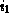
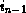

Common Lisp the Language, 2nd Edition
The following functions extract from an array interesting information other than the elements.
[Function]
array-element-type array
array-element-type returns a type specifier for the set of objects that can be stored in the array. This set may be larger than the set requested when the array was created; for example, the result of
(array-element-type (make-array 5 :element-type '(mod 5)))
could be (mod 5), (mod 8), fixnum, t, or any other type of which (mod 5) is a subtype. See subtypep.
[Function]
array-rank array
This returns the number of dimensions (axes) of array. This will be a non-negative integer. See array-rank-limit.
[Function]
array-dimension array axis-number
The length of dimension number axis-number of the array is returned. array may be any kind of array, and axis-number should be a non-negative integer less than the rank of array. If the array is a vector with a fill pointer, array-dimension returns the total size of the vector, including inactive elements, not the size indicated by the fill pointer. (The function length will return the size indicated by the fill pointer.)
[Function]
array-dimensions array
array-dimensions returns a list whose elements are the dimensions of array.
[Function]
array-total-size array
array-total-size returns the total number of elements in the array, calculated as the product of all the dimensions.
(array-total-size x) == (apply #'* (array-dimensions x)) == (reduce #'* (array-dimensions x))
Note that the total size of a zero-dimensional array is 1. The total size of a one-dimensional array is calculated without regard for any fill pointer.
[Function]
array-in-bounds-p array &rest subscripts
This predicate checks whether the subscripts are all legal subscripts for array. The predicate is true if they are all legal; otherwise it is false. The subscripts must be integers. The number of subscripts supplied must equal the rank of the array. Like aref, array-in-bounds-p ignores fill pointers.
[Function]
array-row-major-index array &rest subscripts
This function takes an array and valid subscripts for the array and returns a single non-negative integer less than the total size of the array that identifies the accessed element in the row-major ordering of the elements. The number of subscripts supplied must equal the rank of the array. Each subscript must be a non-negative integer less than the corresponding array dimension. Like aref, array-row-major-index ignores fill pointers.
A possible definition of array-row-major-index, with no error checking, would be
(defun array-row-major-index (a &rest subscripts)
(apply #'+ (maplist #'(lambda (x y)
(* (car x) (apply #'* (cdr y))))
subscripts
(array-dimensions a))))
For a one-dimensional array, the result of array-row-major-index always equals the supplied subscript.

[Function]
row-major-aref array index
X3J13 voted in March 1988 (AREF-1D) to add the function row-major-aref. This allows any array element to be accessed as if the containing array were one-dimensional. The index must be a non-negative integer less than the total size of the array. It indexes into the array as if its elements were arranged one-dimensionally in row-major order. It may be understood in terms of aref as follows:
(row-major-aref array index) ==
(aref (make-array (array-total-size array))
:displaced-to array
:element-type (array-element-type array))
index)
In other words, one may treat an array as one-dimensional by creating a new one-dimensional array that is displaced to the old one and then accessing the new array. Alternatively, aref may be understood in terms of row-major-aref:
(aref array  ... ) ==
(row-major-aref array
(array-row-major-index array ... )
That is, a multidimensional array access is equivalent to a row-major access using an equivalent row-major index.
Like aref, row-major-aref completely ignores fill pointers. A call to row-major-setf is suitable for use as a place for setf.
This operation makes it easier to write code that efficiently processes arrays of any rank. Suppose, for example, that one wishes to set every element of an array tennis-scores to zero. One might write
(fill (make-array (array-total-size tennis-scores)
:element-type (array-element-type tennis-scores)
:displaced-to tennis-scores)
0)
Unfortunately, this incurs the overhead of creating a displaced array, and fill cannot be applied to multidimensional arrays. Another approach would be to handle each possible rank separately:
(ecase (array-rank tennis-scores)
(0 (setf (aref tennis-scores) 0))
(1 (dotimes (i0 (array-dimension tennis-scores 0))
(setf (aref tennis-scores i0) 0)))
(2 (dotimes (i0 (array-dimension tennis-scores 0))
(dotimes (i1 (array-dimension tennis-scores 1))
(setf (aref tennis-scores i0 i1) 0))))
...
(7 (dotimes (i0 (array-dimension tennis-scores 0))
(dotimes (i1 (array-dimension tennis-scores 1))
(dotimes (i2 (array-dimension tennis-scores 1))
(dotimes (i3 (array-dimension tennis-scores 1))
(dotimes (i4 (array-dimension tennis-scores 1))
(dotimes (i5 (array-dimension tennis-scores 1))
(dotimes (i6 (array-dimension tennis-scores 1))
(setf (aref tennis-scores i0 i1 i2 i3 i4 i5 i6)
0)))))))))
)
It is easy to get tired of writing such code. Furthermore, this approach is undesirable because some implementations of Common Lisp will in fact correctly support arrays of rank greater than 7 (though no implementation is required to do so). A recursively nested loop does the job, but it is still pretty hairy:
(labels
((grok-any-rank (&rest indices)
(let ((d (- (array-rank tennis-scores) (length indices)))
(if (= d 0)
(setf (apply #'row-major-aref indices) 0)
(dotimes (i (array-dimension tennis-scores (- d 1)))
(apply #'grok-any-rank i indices))))))
(grok-any-rank))
Whether this code is particularly efficient depends on many implementation parameters, such as how &rest arguments are handled and how cleverly calls to apply are compiled. How much easier it is to use row-major-aref!
(dotimes (i (array-total-size tennis-scores)) (setf (row-major-aref tennis-scores i) 0))
Surely this code is sweeter than the honeycomb.

[Function]
adjustable-array-p array
This predicate is true if the argument (which must be an array) is adjustable, and otherwise is false.
X3J13 voted in June 1989
(ADJUST-ARRAY-NOT-ADJUSTABLE)
to clarify that adjustable-array-p is true of an array
if and only if adjust-array, when applied to that array,
will return the same array, that is, an array eq to the original array.
If the :adjustable argument
to make-array is non-nil when an array is created,
then adjustable-array-p must be true of that array.
If an array is created with the :adjustable argument nil
(or omitted), then adjustable-array-p may be true or false of that
array, depending on the implementation.
X3J13 further voted to define
the terminology ``adjustable array'' to mean precisely ``an array of
which adjustable-array-p is true.''
See make-array and adjust-array.